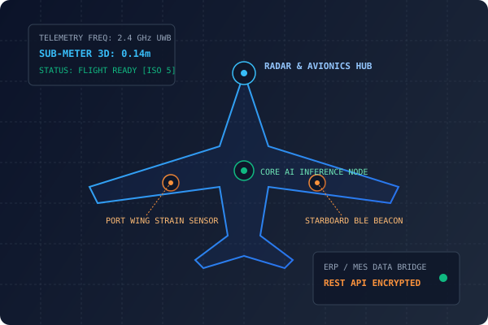

Commercial Aircraft Manufacturing Intelligence Command
AeroMFG AI delivers high-integrity AIoT sensing frameworks and real-time operational intelligence tailored for commercial aircraft manufacturing, space integration, and launch vehicle assembly.
By fusing sub-meter radio frequency telemetry, edge computer vision, and predictive analytics, AeroMFG AI guarantees complete digital thread traceability, workforce hazard protection, and absolute configuration control across high-consequence aerospace facilities.

Operational Intelligence Across the Aerospace Lifecycle
From raw composite layup and precision CNC machining through final avionics integration, vacuum testing, and launch countdown, AeroMFG AI unifies disparate sensor streams into actionable decision models.
Workforce Security & Proximity
Automates hazard-zone safety compliance around volatile propellant loading systems, high-voltage test cells, and cleanroom airlocks using active wearable telemetry.
- Automated exclusion zone breach alarms (<100ms response).
- Cleanroom gowning certification & credential validation.
Orbital Hardware Traceability
Eliminates assembly bottlenecks and physical loss through real-time 3D tracking of mission-critical subassemblies, flight-certified sensors, and tooling.
- Sub-meter spatial tracking across multi-acre hangars.
- Complete digital chain of custody from fabrication to launch pad.
Edge Video Inspection AI
Deep learning models cross-reference live optical assembly feeds against engineering CAD models, catching micro-defects and improper fastener torque before rollout.
- Aircraft-door lock pin and seal bead micro-inspection.
- Foreign Object Debris (FOD) autonomous visual detection.